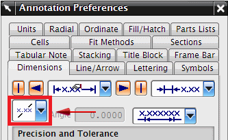
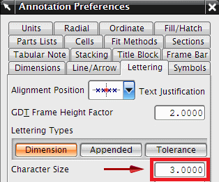
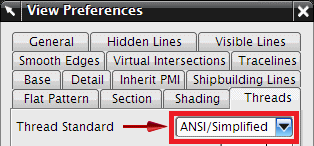

选择首选项→注释。
点击尺寸选项卡。
注意到尺寸文本方位被设置为水平，所有的尺寸都将以这种格式创建，除非您手动更改首选项设置。

点击文字选项卡。
注意到字符大小被设置为3.0000，尺寸和注释都将使用这个高度创建，除非您手动更改首选项设置。

点击取消。
选择首选项→视图。
点击螺纹选项卡。
注意到螺纹标准被设置为 ANSI/简化的，螺纹孔与螺杆将以 ANSI/简化的格式显示，除非您手动更改首选项设置。
